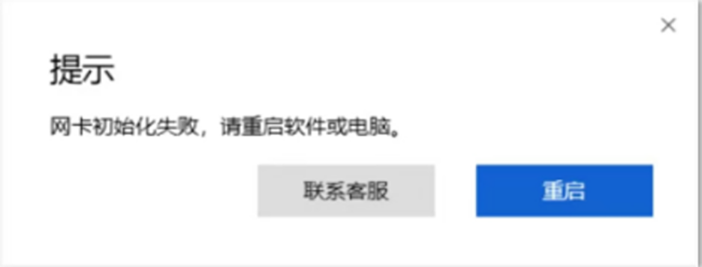
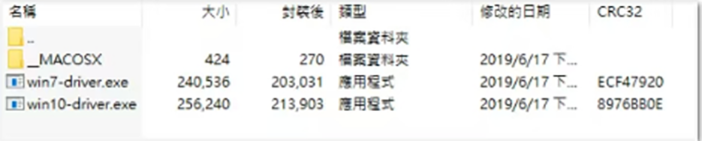
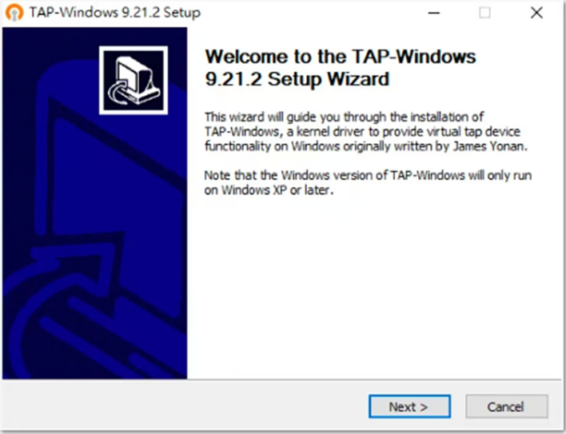
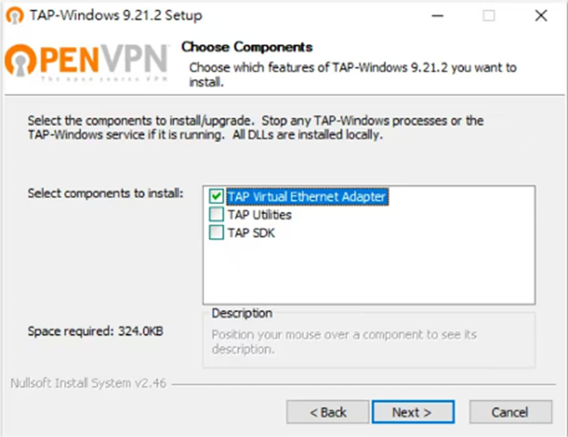
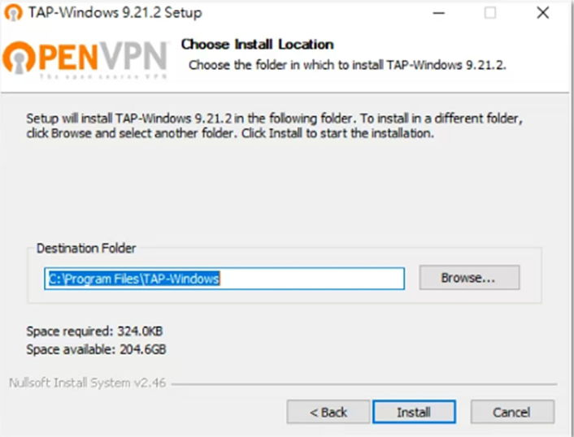
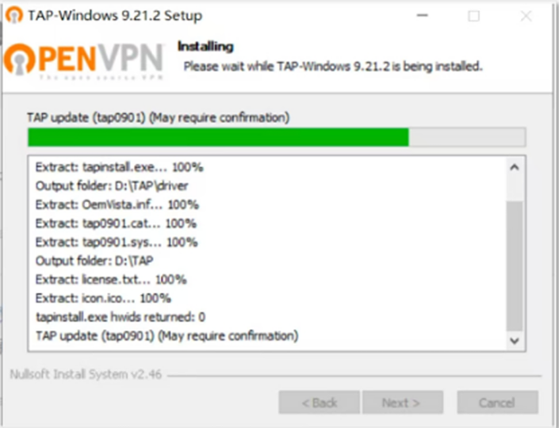

返回
欢迎查看常见问题
智慧服务，让您使用更简单

Windows 版本提示网卡初始化失败如何解决
PC 版本赛盾无法正常开启或在使用过程中提示网卡初始化失败，可通过这篇文章解决這個問题
Windows 环境相较其他系统外在因素影响的可能性多，从而导致赛盾 VPN 无法正常启动如下图所示。

以上方法还是无法解决问题请您根据以下步骤重新安装虑拟网卡的驱动程式:
1.关闭360，安全管家，系统防火墙之类的安全软件;
2.下载驱动程式:https://u.z8n.net/HvLkiw(備用: https://m-n.cc/RoAyey );
3.选择电脑相对应的版本 Windows 7 or 10

4.双击对应档案可看到以下图示

5.在默认设置的情况下不断点击 Next(不要手动勾选设置)

6.最后会跳出默认安装的位置点击 /nstall ;

7.点击 Finish 即可完成安装
若無法安装成功您會看到以下圆示(卡在綠色的进度條):

PS.Windows 环境复杂，若网卡驱动无法顺利安装成功，可能因难以排除的问题导致，暂时没有解决方法。
注:若您在下载和使用过程中有任何问题，您随时可以发送邮件给 {{kfEmail}}，将由专业的客户服务人员帮助您获取到最新版本的软件。